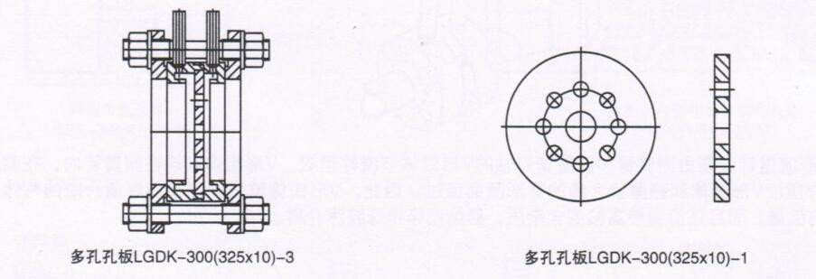

您只需一个电话，我们将提供合适的产品，竭诚为新老客户提供优质的服务！
产品分类
流量仪表与节流装置
网站当前位置：网站首页 > 产品中心- 多孔孔板（平衡流量计）

特点
1、测量精度高 由于多孔孔板流量传感器具有多孔对称结构特点，能对流场进行平衡整流，降低了涡流、振动和信号噪声，流场稳定性大大提高，使线性度比传统节流装置提升了5～10倍。
2、直管段要求短 多孔孔板流量传感器能将流场整流稳定、且压力恢复比传统节流装置快2倍，大大缩短了对直管段的要求。一般情况下直管段要求为前2D、后2D，从而省去大量直管段，尤其是特殊昂贵的材料的管道。
3、量程比宽 多孔孔板流量计正常情况下量程比为15:1，选择合适的参数可以做到30:1.多孔孔板流量计的β值范围为0.25～0.90。
4、永久压力损失低 多孔孔板流量计多孔对称的平衡设计，减少了涡流的形成和紊流的摩擦，降低了动能的损失；在产生同样差压值情况下，永久压力损失约为传统节流装置的1/3，节省了相当大的运行成本，是一种节能型仪表。
5、耐脏污不易堵 多孔孔板流量计多孔对称的设计，减少了涡流的形成和紊流的摩擦，降低流场死区，保证脏污介质顺利通过函数孔，因此多孔孔板流量计可用于测量各种脏污介质，如焦炉煤气、高炉煤气、渣油、回炼油、水煤浆等等。
6、适用范围广 多孔孔板流量计测量范围极广，可测量各种气体、液体、蒸汽；流体条件可以从深低温到超临界状态，过程温度最高达850℃，最大工作压力可达42MPa。
7、一体化结构易于使用、检验和排除故障。-
上一张：热安装套管
下一张：机翼测风装置 LGJY系列